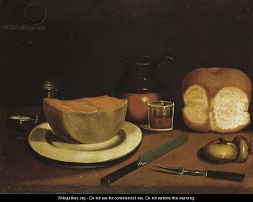

Menachot 8 - The Flour Offering of the High Priest, in Halves
Every day the High Priest had to bring an offering made from an issaron (about 5 pounds) of flour. The dough was made into twelve loaves baked on a shallow pan, and he brought six in the morning and six in the afternoon.
The Priest may want to place half of the flour in a vessel and sanctify it, then later do this for the other half. Regarding this, Rabbi Yochanan said that it cannot be sanctified in halves, but Rabbi Elazar allowed it.
What is the reason of Rabbi Yochanan? The verse " flour offering... half of it ..." means, "bring the complete offering and then divide it in halves." And what is the reason of Rabbi Elazar? - Since it is offered in halves, it can be sanctified in halves.
What can Rabbi Elazar answer to the verse used by Rabbi Yochanan? He agrees that it is better to do everything at once, but if the Priest did it in halves, this is also valid. But the Torah uses the word "statute," which means to be observed precisely?! - The Priest brings the complete amount from his home, but then can divide it.
Art: George Smith of Chichester - Still Life With Bread and Cheese